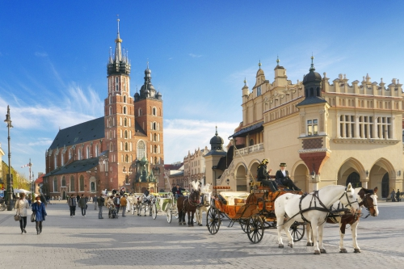

Kraków
(łac. Cracovia, niem. Krakau, jid. קראָקע Kroke) – miasto na prawach powiatu położone w południowej Polsce nad Wisłą, drugie co do liczby mieszkańców i powierzchni miasto kraju, formalna stolica Polski do 1795 r. i miasto koronacyjne oraz nekropolia królów Polski, od 1000 r. nieprzerwanie stolica diecezji krakowskiej (jednej z pięciu w ówczesnej Polsce), a od 1925 archidiecezji i metropolii. Lokowany przed 1228 rokiem, ponownie w 1257 r. Od odzyskania niepodległości w 1918 r. miasto wojewódzkie (od 1998 r. siedziba władz województwa małopolskiego), jest także centralnym ośrodkiem metropolitalnym aglomeracji krakowskiej i Krakowskiego Obszaru Metropolitalnego. Kraków uznawany jest za stolicę historycznej Małopolski. Leży na obszarze Bramy Krakowskiej, Niecki Nidziańskiej i Pogórza Zachodniobeskidzkiego.